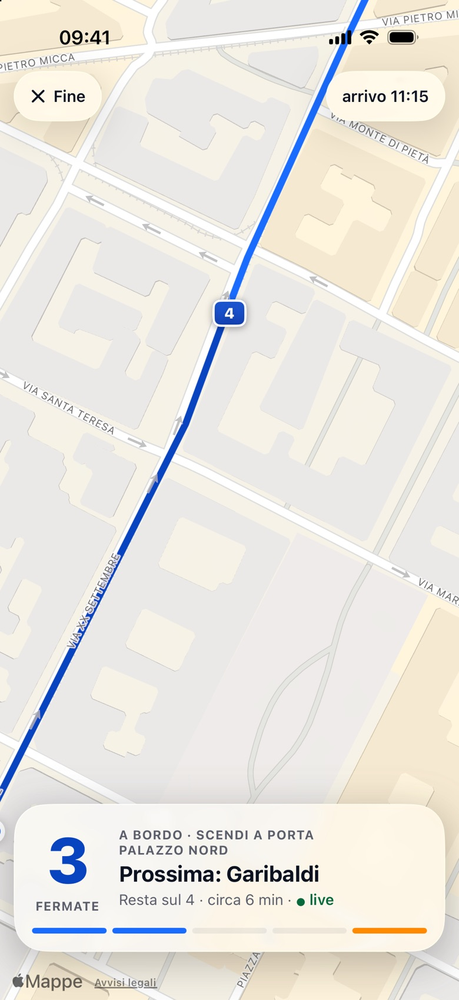
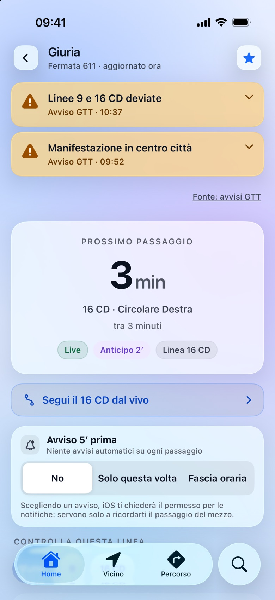
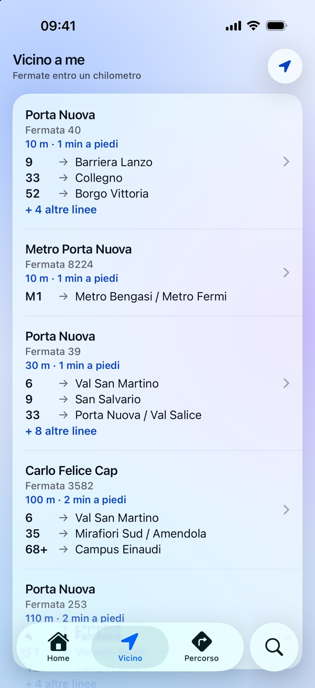

Il prossimo
passa tra poco.
Gli arrivi di bus, tram e metro a Torino, in tempo reale. Calcola il percorso, segui il viaggio fermata dopo fermata e scopri le fermate intorno a te. Gratis, senza pubblicità, senza account.
Novità della 1.4: Avvisa chi ti aspetta.
- Gratis
- Senza pubblicità
- Senza account
- Nessun tracciamento
Nuovo nella 1.3
Dove vai?
Ti ci porta.
Scrivi un indirizzo, un luogo o una fermata: arrivaTO ti propone come arrivarci con bus, tram e metro GTT, con i passaggi in tempo reale.
Poi tocchi «Segui il viaggio»: ti guida a piedi fino alla fermata, ti dice quando passa il mezzo, conta le fermate che mancano e ti avvisa quando scendere. Anche con il telefono bloccato.
Video di Segui il viaggio sulla linea 15, da Sabotino Ovest ad Accademia Albertina, diviso nei cinque passaggi elencati accanto.
Segui il viaggio
Ti accompagna
fino a destinazione.
Un viaggio vero sul 15, da Sabotino Ovest ad Accademia Albertina. Tocca un passaggio per vederlo.
Nuovo nella 1.4
Scrivimi
quando arrivi.
C’è sempre qualcuno che te lo dice, quando esci. E c’è sempre una sera in cui te ne dimentichi.
«Avvisa chi ti aspetta» nasce da lì. Mentre segui un viaggio, con un tocco mandi a chi vuoi la linea, la fermata dove scendi e l’orario di arrivo. Quando sei a destinazione, un altro tocco: «Tutto bene, sono a destinazione.» Se te ne scordi, te lo ricorda l’app.
Si condivide il viaggio, non la persona. Nessuna posizione in diretta, nessuno che ti segue sulla mappa: solo un messaggio che mandi tu, a chi decidi tu. È un modo di prendersi cura di chi ti aspetta.
Guarda il bus
che arriva.
Tocca un passaggio e vedi la linea: le fermate già fatte, dove si trova il mezzo adesso e quante fermate mancano alla tua. Quando sta per arrivare, la tua fermata si illumina.
Vicino a te.
Dal lato giusto.
«Vicino a me» trova le fermate entro un chilometro e ti dice dove va ogni linea. Due paline con lo stesso nome? Capisci subito su quale marciapiede aspettare.
Per «Vicino a me» la posizione resta sul telefono: non viene salvata né inviata.
Deviato?
Lo sai prima.
Manifestazioni, lavori, deviazioni: gli avvisi ufficiali di GTT compaiono sulle linee che segui, in Home e alla fermata. Quando la linea torna normale, l’avviso sparisce da solo.
L’app
Schermate vere,
dati veri.
Catturate dall’iPhone con gli arrivi reali di Torino. Scorri di lato.



E poi
Piccole cose
che fanno la differenza.
Preferiti con le tue linee
Salvi le fermate che usi e scegli le linee da seguire. In Home trovi subito il prossimo mezzo.
Avviso 5 minuti prima
Per la prossima corsa, o ogni giorno in una fascia oraria. Tocchi la notifica e segui il bus dal vivo.
Live o programmato
Sai sempre se il dato è in tempo reale o da tabella, con ritardi e anticipi in minuti.
Quando passa, davvero
Linee che passano solo in certi giorni? Te lo dice.
Il mezzo è accessibile?
Per ogni corsa, se il mezzo accoglie la carrozzina.
Mezzo non accessibile in carrozzina
Tutte le fermate, anche senza rete
Oltre 7.000 fermate GTT nell’app: per nome, per via o con il codice palina scritto sul cartello.
Accessibile per davvero
VoiceOver legge frasi complete, il testo segue le dimensioni di iOS anche al massimo, «Aumenta contrasto» rende tutto più nitido e le animazioni si fermano con «Riduci movimento». Dettagli
Le nostre promesse
Ti aiuta ad aspettare. Non ti vende niente.
arrivaTO è un progetto indipendente. Non guadagna sui tuoi dati e non ti riempie di banner. Leggi l’informativa privacy
- Niente pubblicità, mai.
- Niente account né registrazione.
- Nessun tracciamento: la posizione non viene mai salvata.
- Preferiti e impostazioni restano solo sul tuo telefono.
Domande frequenti
Prima di provarla.
È l’app ufficiale di GTT?
No. arrivaTO è un progetto indipendente, non affiliato né approvato da GTT S.p.A. o 5T S.r.l. Usa i dati pubblici di GTT e il servizio in tempo reale di Muoversi a Torino.
Quanto costa?
Niente. È gratis, senza pubblicità e senza acquisti in-app.
Quanto sono affidabili i tempi?
Arrivano dal servizio pubblico Muoversi a Torino. Con «live» il dato viene dal mezzo in tempo reale; con «programmato» è l’orario previsto. Se il servizio non risponde, l’app riprova da sola e, se serve, mostra gli ultimi dati scaricati segnandoli come non aggiornati.
«Vicino a me» usa la mia posizione?
Solo mentre l’app è aperta e solo sul telefono: le fermate vicine sono calcolate lì, con l’elenco GTT incluso nell’app. La posizione non viene salvata né inviata.
Percorso usa la mia posizione?
Solo se parti da «La mia posizione»: viene inviata a Muoversi a Torino (5T) per calcolare il percorso, e non viene salvata né da noi né dall’app. Gli indirizzi che cerchi passano da Apple Maps. Dettagli nell’informativa privacy.
Come funziona «Segui il viaggio» con il telefono bloccato?
Mentre l’app è aperta ti guida con la posizione. Quando blocchi il telefono, la Live Activity mostra il conto alla rovescia fino alla tua fermata e una notifica ti avvisa poco prima di scendere. A telefono bloccato l’app non usa la posizione: il conto alla rovescia è una stima, quindi se il mezzo è molto in ritardo o in anticipo può essere un po’ sfasato.
Da dove arrivano gli avvisi su deviazioni e manifestazioni?
Dal canale pubblico di avvisi di GTT. arrivaTO li mostra così come sono pubblicati, sulle linee che segui, e indica sempre la fonte.
C’è anche per Android?
Non ancora: è in test su Google Play e cerchiamo persone che la provino. Come partecipare lo trovi nella pagina Android.
Posso comprare i biglietti?
No, arrivaTO non vende biglietti. Per quelli usa i canali ufficiali GTT.
Ho trovato un problema, a chi scrivo?
Scrivi a hello@flbanca.it, indicando se puoi fermata, linea e ora. Altre risposte nella pagina Assistenza.
Alla fermata, lo sai già.
Gratis sull’App Store; su Android in test.
iPhone (iOS 17+): scarica dall’App Store (Italia). Android (8+): l’app è in test su Google Play e cerchiamo tester.